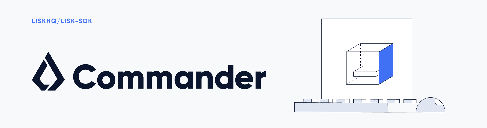

What is Lisk Commander?

Lisk Commander is a command line interface tool designed to be a low entry point, coupled with being the most convenient and user-friendly tool for developers who are looking for an efficient way of coding.
Lisk Commander allows communication from the command line with a remote or local node in order to access and utilise Lisk-related functionalities.
What can be achieved with Lisk Commander?
-
Bootstrapping a blockchain application.
-
Decrypting/encrypting passphrases or messages.
-
Creating new accounts.
-
And much more… For further details please see the command reference.
Setup
| Supported platforms: Platforms with Node.js versions 8.3 and above. |
Dependencies
The following dependencies need to be installed to run the Lisk SDK:
| Dependencies | Version |
|---|---|
Node.js |
v16.15.0 |
Pre-installation
Install Node.js
Node.js is supported on most operating systems. Follow the instructions for your operating system on the Node.js downloads page. Lisk Commander requires Node.js versions 8.3 or above.
NPM is automatically installed along with Node.js.
Usage
| For a full list of all commands and their available options, see the Command reference |
Pass arguments and options directly from the command line, as shown in the example below:
$ lisk (-v|--version|version) # returns the current version of Lisk Commander.
$ lisk [TOPIC]:[ACTION] # to run a command. Available actions depend on the command.
$ lisk [TOPIC] # displays help for a specific command.
$ lisk # displays general help and the command list.$ lisk
A command line interface for Lisk
VERSION
lisk-commander/5.1.10 darwin-x64 node-v16.15.0
USAGE
$ lisk [COMMAND]
TOPICS
account Commands relating to Lisk accounts.
generate Commands relating to Lisk generator.
message Commands relating to user messages.
passphrase Commands relating to Lisk passphrases.
COMMANDS
autocomplete display autocomplete installation instructions
console Lisk interactive REPL (Read-eval-print loop), session to run commands.
hash-onion Create hash onions to be used by the forger.
help display help for lisk
init Bootstrap a blockchain application using Lisk SDK.
network-identifierSee concrete examples on the Commands page.